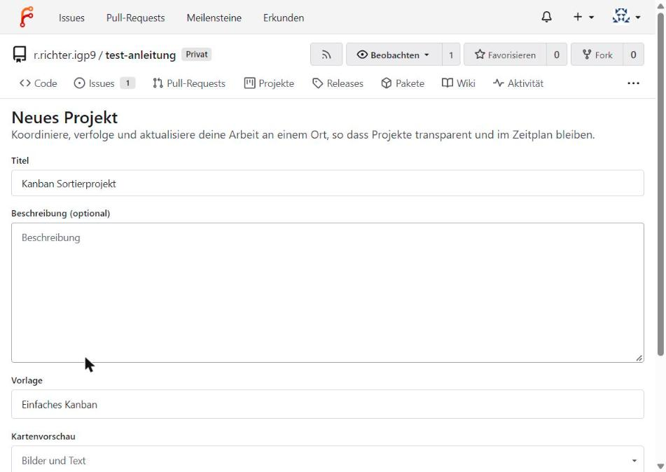

Überblick › LB 4/5 OOP und Softwareentwicklung
5.6 Projekt-Leitfaden
Dieser Leitfaden begleitet euch durch das Projekt aus Seite 5.5. Er sagt, was in welchem Sprint fertig sein soll, wie ihr zurückblickt und euch verbessert, wie das README aussieht, wann eine Story „fertig“ ist und wie am Ende bewertet wird. Druckt euch die Checklisten aus oder kopiert sie in ein Issue – dann seht ihr jederzeit, was noch fehlt.
1. Der Ablauf im Überblick
| Phase | Dauer | Was passiert | Ergebnis im Repository |
|---|---|---|---|
| Sprint 0: Start | 2 Std. | Gruppe und Thema, Repository anlegen, User Stories mit Akzeptanzkriterien, Klassendiagramm, Zuständigkeiten | README mit Ziel und Team, Issues, Board, docs/klassendiagramm.md |
| Sprint 1: Modell | 4–5 Std. | Model-Klassen mit Tests, je Klasse ein Branch und ein Pull Request mit Review | Klassen-Module, Testdateien, erste gemergte Pull Requests |
| Retrospektive 1 | 15 min | Was lief gut, was ändern wir? | Eintrag in docs/retrospektiven.md |
| Sprint 2: Ablauf | 4–5 Std. | View (ansicht.py) und Controller (main.py), weitere Stories, Tests ergänzen | lauffähiges Programm |
| Retrospektive 2 | 15 min | wie oben, dazu: Hat unsere Vereinbarung aus Retro 1 gewirkt? | zweiter Eintrag |
| Sprint 3: Abschluss | 3 Std. | Fehler beheben, aufräumen, README fertig | Release v1.0 |
| Code-Review-Gespräch | 10 min je Gruppe | Jedes Mitglied erklärt einen eigenen Pull Request und beantwortet eine Frage zum Code. Keine Präsentation. | – |
In jeder Stunde: Zu Beginn ein Daily von höchstens drei Minuten (wie in 10.2): Was habe ich seit letzter Stunde geschafft? Was mache ich heute? Wo hänge ich fest? Danach Board ansehen und offene Pull Requests reviewen, bevor ihr Neues anfangt. Am Ende der Stunde: alles hochgeladen, Board aktuell?
Rollen: Die Lehrkraft ist Product Owner und Ansprechpartnerin für fachliche Fragen. In der Gruppe übernimmt je Sprint eine Person die Rolle des Scrum Masters: Sie achtet auf die Regeln aus Seite 5.5, moderiert das Daily und die Retrospektive und meldet Hindernisse (z. B. „Mein Konto hat keine Schreibrechte“) sofort der Lehrkraft. Die Rolle wechselt mit jedem Sprint.
2. Aufbau des Repositorys
Alle Python-Dateien liegen im obersten Ordner, damit die Importe ohne Pakete funktionieren. Dokumente kommen nach docs/.
fahrgemeinschaften/
├── README.md Ziel, Start, Bedienung, Team, Stand
├── .gitignore Vorlage "Python"
├── docs/
│ ├── klassendiagramm.md
│ └── retrospektiven.md
├── fahrt.py Model (Person A)
├── test_fahrt.py Tests dazu (Person A)
├── kleinbusfahrt.py Model (Person B)
├── test_kleinbusfahrt.py Tests dazu (Person B)
├── fahrtenboerse.py Model (Person C)
├── test_fahrtenboerse.py Tests dazu (Person C)
├── ansicht.py View (je Sprint eine verantwortliche Person)
└── main.py Controller (je Sprint eine verantwortliche Person)3. Die Definition of Done des Kurses
„Fast fertig“ zählt nicht. Eine Story, bei der der Review fehlt, bleibt im Board in „In Progress“ und wandert in den nächsten Sprint.
Eine User Story ist erst fertig, wenn alle Punkte erfüllt sind:
- Alle Akzeptanzkriterien des Issues sind erfüllt und abgehakt.
- Zu jeder neuen oder geänderten Model-Methode gibt es Tests mit Grenzwerten in
test_….py; alle Testdateien laufen fehlerfrei. - Das Model enthält kein
printund keininput; Attribute sind privat, öffentliche Methoden haben Typhinweise. - Die Änderung kam über einen Pull Request mit Issue-Nummer im Titel und in den Commit-Nachrichten.
- Eine andere Person hat den Pull Request geprüft (Kommentar oder Freigabe) und dabei die Tests selbst gestartet.
- Der Pull Request ist in
maingemergt, der Branch gelöscht, das Issue geschlossen, die Karte steht auf „Done“. main.pystartet auf dem Stand vonmainohne Fehler.
4. Checklisten je Sprint
Sprint 0: Start (2 Std.)
- ☐ Thema und Ersatzthema gewählt und der Lehrkraft gemeldet (Aufgabe 5.5.1)
- ☐ Repository angelegt, wie die Lehrkraft es vorgibt (selbst angelegt oder in der Kurs-Organisation): privat, mit README und
.gitignore„Python“; Name in Kleinbuchstaben mit Bindestrichen, z. B.fahrgemeinschaften - ☐ alle Gruppenmitglieder mit Schreibrechten eingetragen, die Lehrkraft ebenfalls (Einstellungen → „Mitarbeiter“)
- ☐ jedes Mitglied hat sich angemeldet und sieht „Datei hinzufügen“
- ☐ jede User Story als Issue mit Akzeptanzkriterien als Aufgabenliste (Aufgabe 5.5.2); Label
Sprint 1bzw.Sprint 2, Schätzung in Story Points im Titel oder als Label - ☐ Board unter „Projekte“ mit der Vorlage „Einfaches Kanban“, alle Issues zugeordnet
- ☐
docs/klassendiagramm.mdmit Klassendiagramm und Zuständigkeit je Klasse (Aufgabe 5.5.3) - ☐ README nach der Vorlage in Abschnitt 6 begonnen: Ziel, Team, Zuständigkeiten
- ☐ README und Klassendiagramm kamen bereits als Pull Request mit Review – die erste Übung im Ablauf

Sprint 1: Modell (4–5 Std.)
- ☐ Jede Person baut ihre Model-Klasse(n) mit Testdatei – eigener Branch je Issue, z. B.
3-fahrt-eintragen - ☐ zuerst die Tests aus den Akzeptanzkriterien ableiten (Seite 5.3, Aufgabe 5.3.6), dann die Methode schreiben
- ☐ kleine Pull Requests: lieber eine Methode mit Tests als die ganze Klasse auf einmal
- ☐ jeder Pull Request hat ein Review mit mindestens einem konkreten Kommentar oder einer Freigabe von einer anderen Person
- ☐ Klassen, die andere Klassen benutzen (z. B.
FahrtenboersenutztFahrt), werden erst begonnen, wenn die benutzte Klasse inmainist – oder ihr legt vorab die Schnittstelle (Methodennamen und Typen) im Klassendiagramm fest - ☐ Board aktuell, Issues mit „Schließt #…“ geschlossen
- ☐ am Sprintende: alle Testdateien laufen auf dem Stand von
main
Retrospektive (je 15 min nach Sprint 1 und 2)
- Sammeln (5 min): Jede Person schreibt für sich je bis zu drei Punkte zu „Das lief gut“, „Das hat gestört“, „Das probieren wir aus“.
- Besprechen (5 min): Reihum vorlesen, Gleiches zusammenfassen. Es geht um die Zusammenarbeit und den Ablauf, nicht um Schuld.
- Vereinbaren (5 min): Genau eine konkrete, überprüfbare Vereinbarung für den nächsten Sprint, z. B. „Jeder offene Pull Request wird am Anfang der nächsten Stunde reviewt“ – nicht „Wir kommunizieren besser“.
- Festhalten: Die Person in der Scrum-Master-Rolle trägt die Punkte und die Vereinbarung in
docs/retrospektiven.mdein (per Pull Request). In Retro 2 prüft ihr zuerst: Hat die Vereinbarung aus Retro 1 gewirkt?
Gute Fragen für die Retrospektive: Wie lange lagen Pull Requests ungeprüft? Gab es Konflikte oder überschriebene Änderungen – warum? Haben wir die Definition of Done eingehalten oder „fast fertige“ Stories als fertig gezählt? Wie gut passte unsere Schätzung?
Sprint 2: Ablauf (4–5 Std.)
- ☐ verantwortliche Person für
main.pyund füransicht.pyfestgelegt; Wünsche der anderen kommen als Kommentar ins Issue - ☐
main.pymit Menü undif __name__ == "__main__":, alle Ein- und Ausgaben in View bzw. Controller - ☐ weitere Stories umgesetzt, Model-Tests ergänzt
- ☐ jede Person hat mindestens einen Pull Request gestellt und mindestens einen reviewt
- ☐ Vereinbarung aus Retrospektive 1 umgesetzt
- ☐ am Sprintende: Programm über
main.pymit allen bisher fertigen Stories durchgespielt
Sprint 3: Abschluss (3 Std.)
- ☐ gefundene Fehler als Issues erfasst, behoben – je Fehler ein Test, der ihn vorher gezeigt hätte
- ☐ aufgeräumt: keine auskommentierten Altlasten, keine Testausgaben im Model, keine überflüssigen Dateien oder Branches
- ☐ Klassendiagramm passt zum Code
- ☐ README vollständig (Abschnitt 6)
- ☐ offene Stories bewusst in „Nicht geschafft“ im README genannt statt halb eingebaut
- ☐ Release erstellt: Reiter „Releases“ → „Neues Release“, Tag
v1.0aufmain, Titel „Version 1.0“, kurze Beschreibung, veröffentlichen
5. Code-Review-Gespräch statt Präsentation
Am Ende steht kein Vortrag mit Folien, sondern ein Gespräch wie in einem echten Entwicklungsteam: Die Lehrkraft sitzt mit eurer Gruppe am Rechner, das Repository ist geöffnet. Etwa 10 Minuten je Gruppe.
- Eigener Pull Request (je Person etwa 2 Minuten): Jede Person öffnet einen eigenen, gemergten Pull Request – die Lehrkraft kann auch einen anderen auswählen – und erklärt: Welches Issue setzt er um? Was macht der Code, an einem konkreten Aufruf erklärt? Welche Tests gibt es, warum diese Grenzwerte? Was hat das Review verändert?
- Eine Frage zum Code der Gruppe (je Person etwa 1 Minute): Die Lehrkraft zeigt auf eine Stelle im Code einer anderen Person, z. B.:
- „Was passiert hier, wenn die Liste leer ist?“
- „Warum ist dieses Attribut privat? Was wäre, wenn nicht?“
- „Welche Methode wird in dieser Zeile aufgerufen, wenn das Objekt eine Unterklasse ist?“
- „Warum steht diese Ausgabe in
ansicht.pyund nicht in der Klasse?“ - „Welcher Test würde fehlschlagen, wenn hier
<=statt<stünde?“
- Kurzer Abschluss: Was würdet ihr mit einer Woche mehr Zeit tun?
Vorbereitung: Lest vorher die Pull Requests der anderen noch einmal. Wer jedes Review ernst genommen hat, kann auch Fragen zum Code der anderen beantworten. Auswendig lernen hilft nicht – verstehen schon.
6. README-Vorlage
Die README ist die Startseite eures Repositorys. Kopiert diese Vorlage in Sprint 0 und füllt sie bis Sprint 3 vollständig aus.
# Fahrgemeinschaften zum Auswärtsspiel
Projekt im Kurs „OOP und Softwareentwicklung“, Thema 4 (Stufe ★★)
## Ziel
Ein bis zwei Sätze: Wer nutzt das Programm wofür?
## Team und Zuständigkeiten
| Person | Model-Klassen | weitere Verantwortung |
|---|---|---|
| Lea | Fahrt | main.py in Sprint 2 |
| Tim | Kleinbusfahrt | ansicht.py in Sprint 2 |
| Ilka | Fahrtenboerse | README, Retrospektiven |
## Starten
1. Repository als ZIP herunterladen und entpacken.
2. `main.py` in Thonny öffnen und starten.
## Bedienung
Menü, Eingaben und ein kurzer Beispielablauf.
## Tests
Jede Datei `test_….py` einzeln in Thonny starten. Stand: alle Tests bestanden (Datum).
## Umgesetzte User Stories
- [x] #1 Fahrt anbieten
- [x] #2 freie Fahrten an einem Datum
- [ ] #6 Spieler ohne Mitfahrt (nicht geschafft)
## Nicht geschafft / bekannte Fehler
…
## Klassendiagramm
siehe `docs/klassendiagramm.md`7. Bewertung
Ist das Projekt benotet, gilt diese Aufteilung. Ist es eine Übung, bekommt ihr dieselben Bereiche als Rückmeldung ohne Note.
| Bereich | Anteil | Woran erkennbar |
|---|---|---|
| Gruppenprodukt | 40 % | Programm läuft über main.py und erfüllt die umgesetzten Stories; sinnvolle Klassen (Kapselung, Beziehungen, Vererbung oder Polymorphie, wo sie passt); MVC-Trennung; Tests decken Grenzwerte ab; README vollständig |
| Eigener Anteil | 30 % | eigene Commits und Pull Requests (Umfang und Qualität des eigenen Codes), Qualität der eigenen Reviews, erledigte Issues – im Repository einzeln nachvollziehbar (Aktivität je Person auf git.inf7.eu) |
| Code-Review-Gespräch | 30 % | eigenen Code erklären, Entscheidungen begründen, eine Frage zum Code der Gruppe beantworten |
Hinweis: Wie wird der eigene Anteil sichtbar?
- Jede Person lädt ihre Arbeit selbst hoch und stellt ihre Pull Requests selbst. Ein Commit zählt für die Person, die ihn erzeugt hat.
- Habt ihr zu zweit an einem Rechner gearbeitet, nennt die Commit-Nachricht beide:
#4 Fahrt: Kostenanteil (mit Tim). - Auch Reviews sind Arbeit: Ein Kommentar mit Zeile, Problem und Vorschlag zählt; ein „passt“ ohne Begründung kaum.
- Ein Commit kurz vor Schluss mit dem ganzen Projekt („alles hochgeladen“) zeigt keinen nachvollziehbaren Anteil.
8. Wenn es hakt
| Problem | Was tun? |
|---|---|
| Ein Pull Request wartet seit Tagen auf ein Review. | Im Daily ansprechen; Regel: offene Pull Requests werden vor neuer Arbeit geprüft. |
| Der Pull Request zeigt einen Konflikt. | Wie in Beispiel 2 auf Seite 5.4: neuer Branch vom aktuellen main, Änderung dort einbauen, alten Pull Request mit Begründung schließen. Ursache in der Retrospektive klären. |
Versehentlich direkt auf main gespeichert. | Nicht verstecken: im Daily sagen, die Änderung nachträglich von einer anderen Person prüfen lassen (Kommentar am Commit), künftig vor dem Speichern die Option prüfen. |
| Ein zweiter Branch mit zweitem Pull Request ist entstanden. | Vor dem Speichern nicht auf den eigenen Branch gewechselt (Seite 5.4, Browser-Schritt 4). Überzähligen Pull Request schließen. |
| Ein Mitglied fehlt längere Zeit. | Seine Issues im Board neu zuweisen, Lehrkraft informieren; bereits gemergte Arbeit bleibt ihm zugeordnet. |
| Wir schaffen nicht alle Stories. | Product Owner (Lehrkraft) fragen, welche Story wegfallen kann. Lieber weniger Stories vollständig nach der Definition of Done als alle halb. |
Das Wichtigste
Definition of Done: Vereinbarte Kriterien, die jede User Story erfüllen muss, bevor sie als fertig gilt. „Fast fertig“ zählt nicht.
Code-Review: Eine andere Person prüft jede Änderung im Pull Request und startet dabei die Tests selbst.
Retrospektive: Nach einem Sprint blickt das Team zurück: Was lief gut, was ändern wir?
Grundaufgaben
Aufgabe 5.6.1: Sprint 0 durchführen AFB I–II
Arbeitet die Checkliste „Sprint 0“ ab. Haltet in einem Issue „Sprint 0“ als Aufgabenliste fest, was erledigt ist. Am Ende der zweiten Stunde zeigt ihr der Lehrkraft das Board und die README.
Aufgabe 5.6.2: Retrospektive durchführen und dokumentieren AFB II–III
- Führt nach Sprint 1 eine Retrospektive nach Abschnitt 4 durch und tragt sie in
docs/retrospektiven.mdein. - Wertet dafür auch euer Repository aus: Wie viele Pull Requests gab es, wie lange lagen sie im Durchschnitt bis zum Review, wie viele Stories erfüllen die Definition of Done vollständig? Wie hoch ist eure Velocity, und wie passt sie zu eurer Schätzung?
- Formuliert eine überprüfbare Vereinbarung und legt fest, woran ihr in Retrospektive 2 erkennt, ob sie gewirkt hat.
Das kann ich jetzt
Grau steht, was der Lehrplan verlangt, darunter, was das für dieses Thema konkret heißt. Hake einen Punkt ab, wenn er in deinem Hefter zusammengefasst ist und du ihn ohne Hilfe kannst. Wie du ihn zusammenfasst, entscheidest du selbst. Die Haken speichert nur dein Browser.
Lehrplan LB 4 Gestalten einer Problemlösung mittels objektorientierten Paradigmas
Lehrplan LB 5 Anwenden von Methoden der agilen Softwareentwicklung
Weiter mit diesem Thema
Übungen →